Claims returned¶
“Claims returned” is one of the three standard terms to describe the lost status of an item. The three standard terms are:
- Missing
- Lost
- Claims returned
“Missing” means that an item is supposed to be on the shelf, but staff cannot find the item.
“Lost” means that a patron checked out an item and never returned it.
“Claims returned” means that the patron checked out the item and they claim that they have returned it, but the item was never checked in and staff cannot find it on the shelf where it is supposed to be.
Many integrated library systems have a system in place that allow staff to mark an item as “Claims returned” which keeps the item checked out to the patron at the same time it acknowledges that the patron claims to have returned the item but that the item cannot be found in the library. The Koha community has been working on developing this feature and this is its first iteration.
To use the new “Claims returned” feature:
- Patron checks out an item and then says they’ve returned it
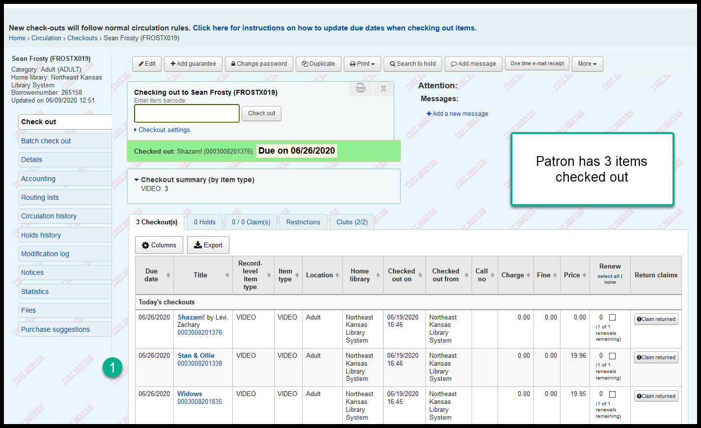
- From the check-out or details page, new column called “Return claims”
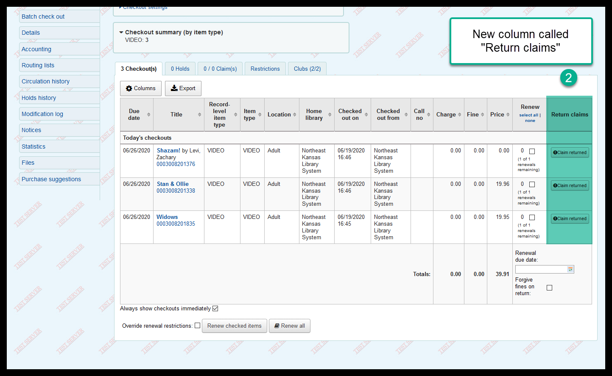
Click on “Claim returned” button to start the process
(in this example I’m going to mark STAN & OLLIE as Claims Returned)
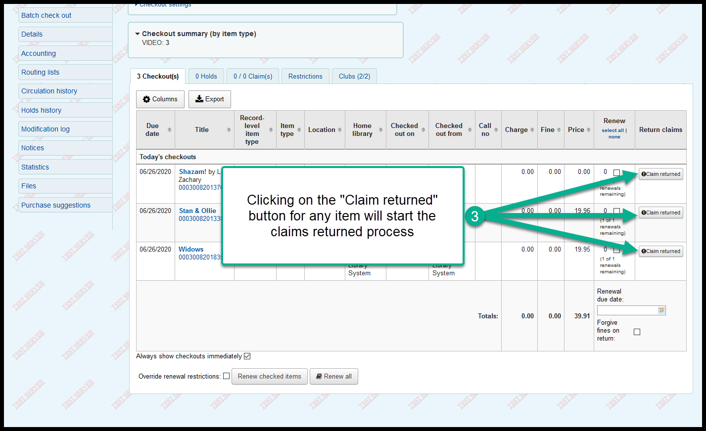
- When you click on the “Claim Returned” button, a pop-up will open and you should put an explanation for the claim in the notes field
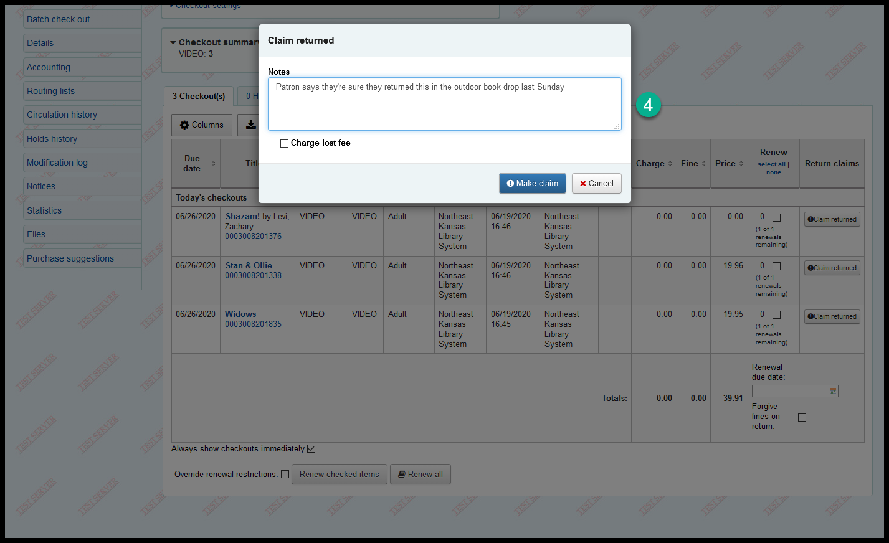
- If you check the “Charge lost fee” box the patron will be billed for the replacement cost of the item - if you leave it unchecked, the patron will not be charged.
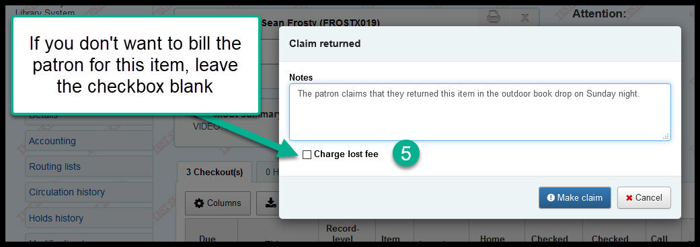
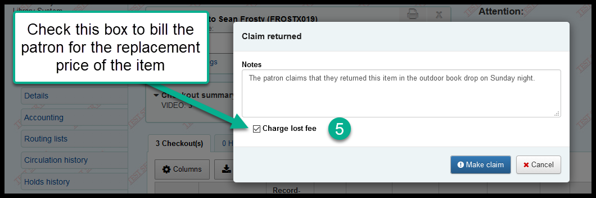
- Once the form has been filled out, click on “Make claim” to submit the form
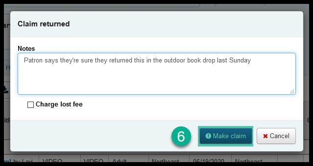
- This is a brand new feature and it’s buggy - in order for the process to complete, you need to click on the “Checkout” tab to reload the page
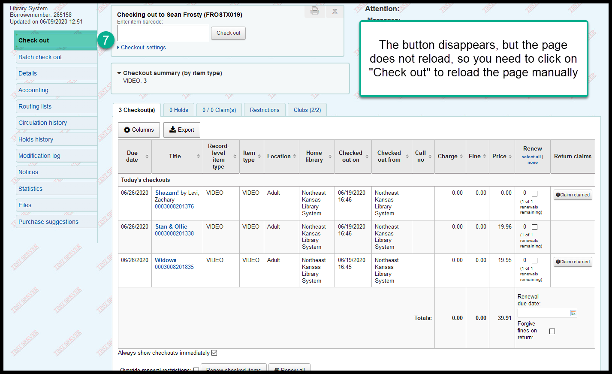
- Once you reload, the claims returned date will appear in the “Return claims” column for that item
(The item will remain on the patron’s account until checked in)
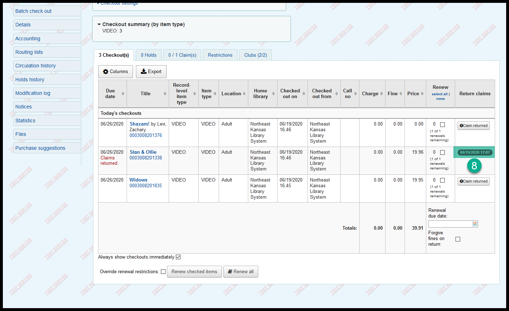
- You can see more details if you click on the “Claim(s)” tab
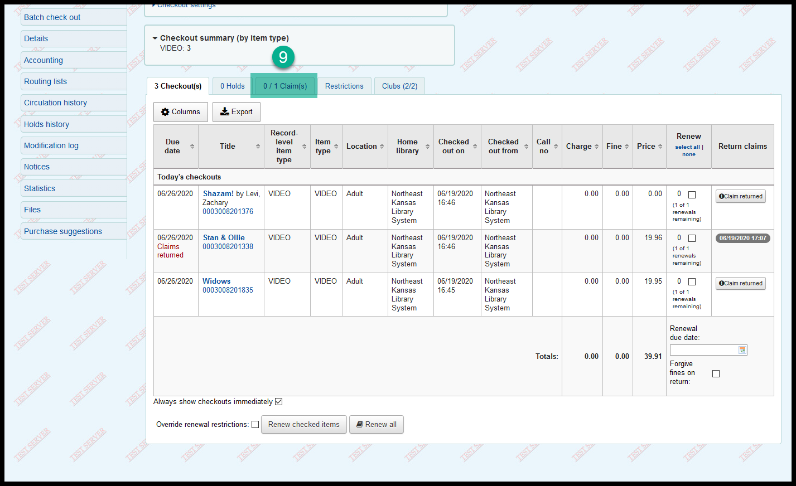
- Staff can edit or resolve the claims returned from the action button on the “Claim(s)” tab
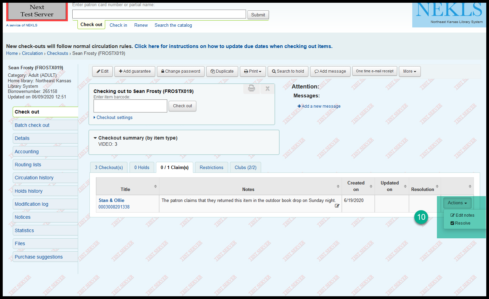
- Click on “Edit notes” from the “Action” button to make changes or updates to the notes
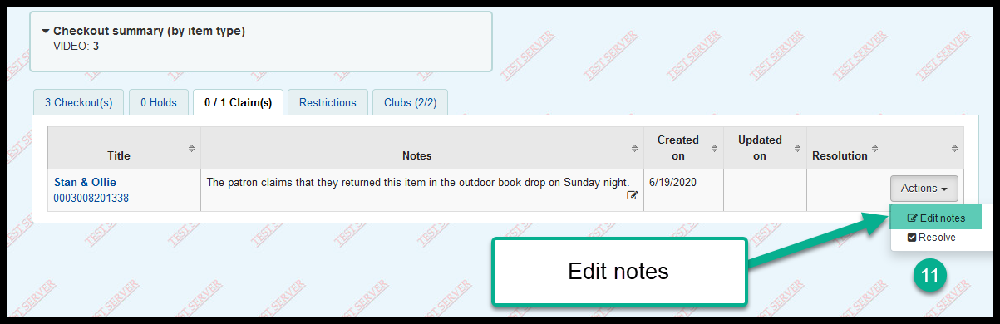
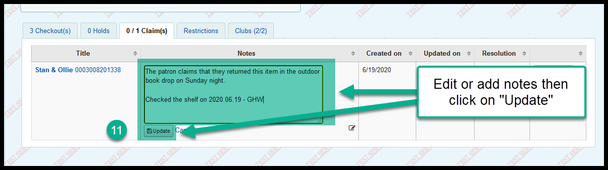
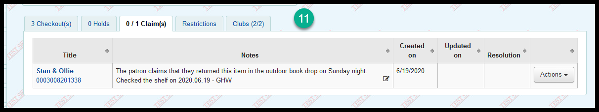
- Click on “Resolve” from the “Action” button to mark the claims returned as resolved
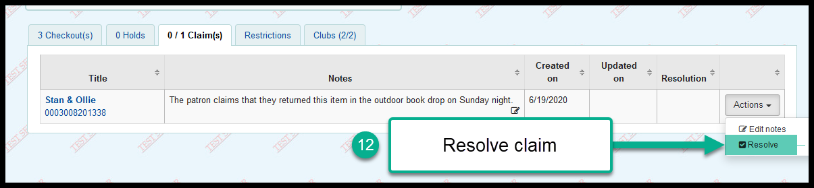
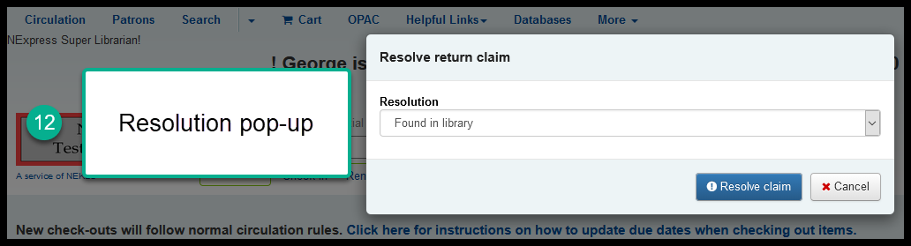
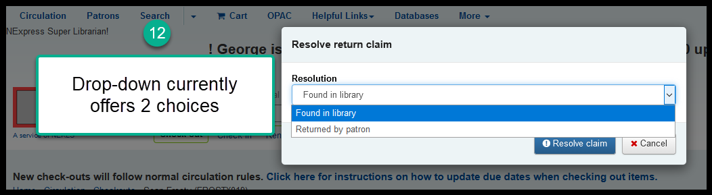
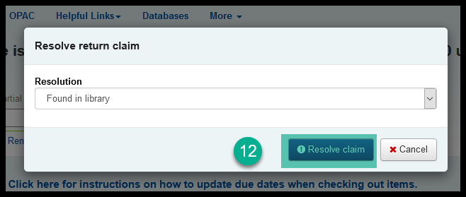
- A running total of the number of times a patron has claimed to return an item will be kept on their account
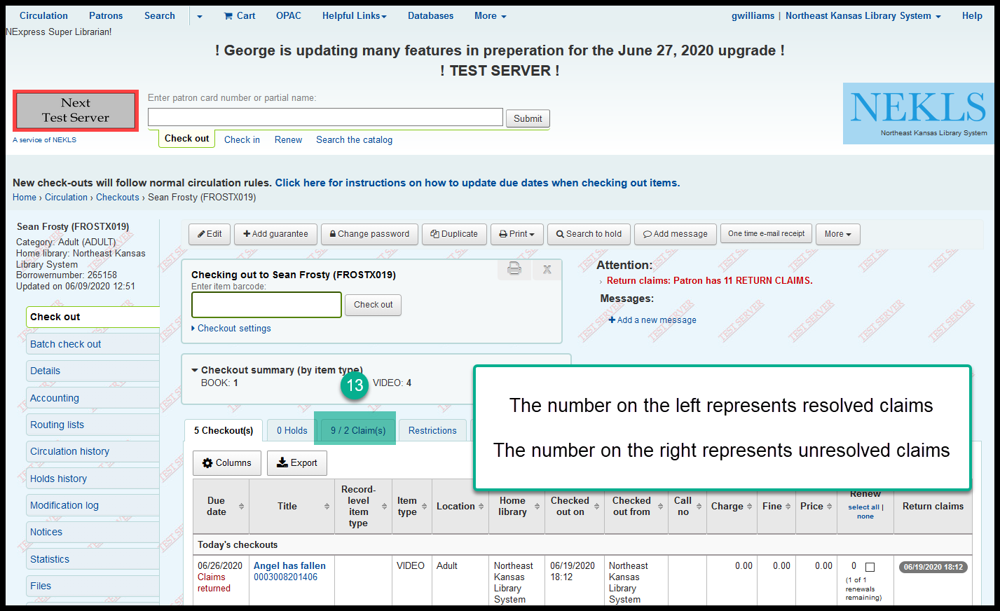
- Staff get a warning when the number of claims returned is greater than 10
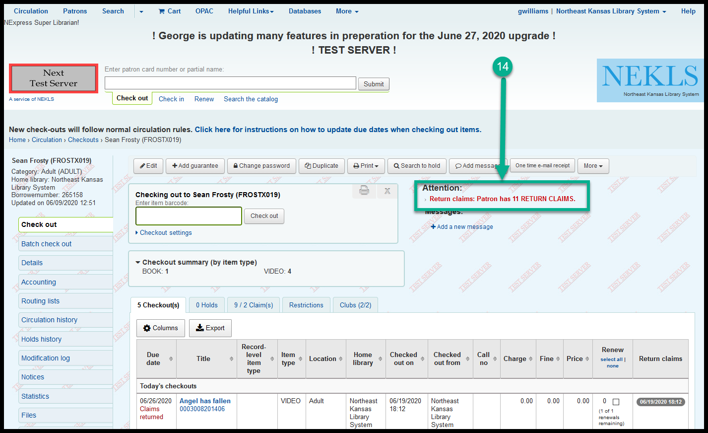
- If an item is checked in before a claims returned is resolved, staff will get a warning message that a patron claimed to have returned the item
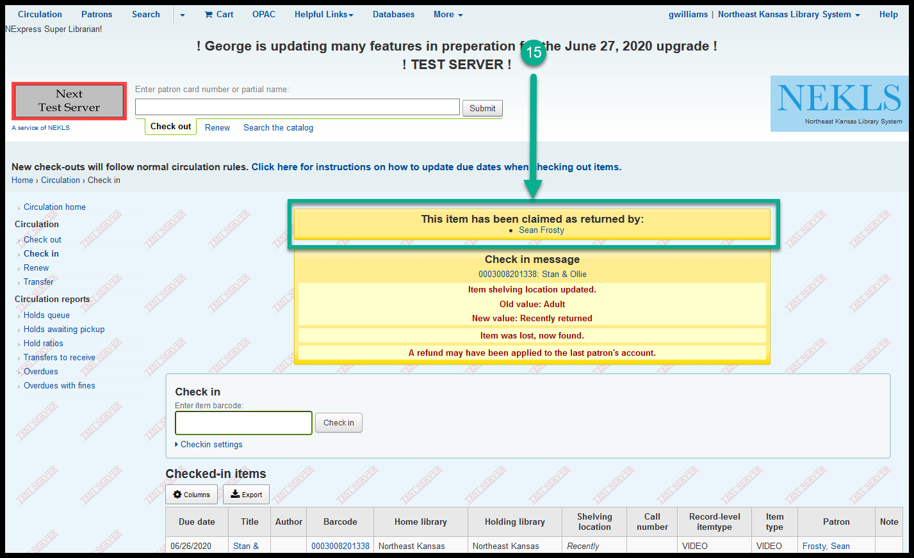
- Staff can delete claims returned history from the patron’s account after a claim has been resolved
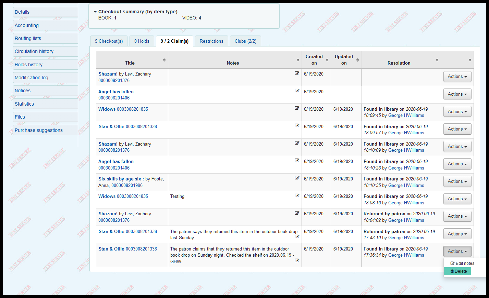
This is a brand new feature in Koha and it is still in development. Future developments that have been suggested include:
- Add the ability to charge the patron the replacement cost of the item during the resolution phase of the process
- Add more choices to the resolution drop-down
- Add the ability to turn off the feature for some staff accounts (i.e. NEKLSCIRC can’t use the feature but NEKLSTECH and NEKLSDIRECTOR can)